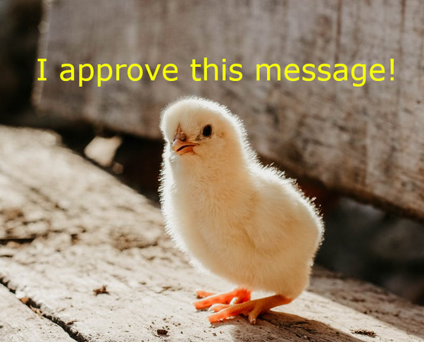

[Deux raisons conséquentes]
*L'écologie*
L'impact de l'élevage sur l'environnement n'est plus à prouver (déforestation, pollution de l'air, de l'eau, impact sur la biodiversité, impact sur le sol et l’érosion). En boycottant la chair animale, on limite notre impact négatif.
Source: FAO (Organisation des Nations Unies pour l’alimentation et l’agriculture), conservation-nature, IIPCC (Intergovernmental Panel on Climate Change )
*La santé*
L' être humain vit en bonne santé sans manger d'animaux si un minimum d'attention est portée à la diététique (vitamine B12 par exemple). De nombreuses études montrent même que l'alimentation végétale a beaucoup d'avantages.
Source: Key et al. 2006, Craig 2009, diététique à suivre, British Nutrition Foundation, Clarys et al. 2014, White et Frank1994
[Une raison intrinsèque]
*L'éthique*
Tuer et exploiter les animaux n'est pas nécessaire. Boycotter la viande, c’est refuser une participation active à des massacres, à de l’injustice et à de la souffrance gratuite.
Inspiration: Ruth Harrison, Peter Singer, Paul Watson, Jane Goodall

Mais il y a aussi de mauvaises raisons de ne pas être végan, si tu en cherches, j'en liste quelques unes ici.
Et Claude Lévi-Strauss pour le mot de la fin:
"Un jour viendra où l’idée que, pour se nourrir, les hommes du passé élevaient et massacraient des êtres vivants et exposaient complaisamment leur chair en lambeaux dans des vitrines, inspirera sans doute la même répulsion qu’aux voyageurs du XVIème ou du XVIIème siècle, les repas cannibales des sauvages américains, océaniens ou africains"